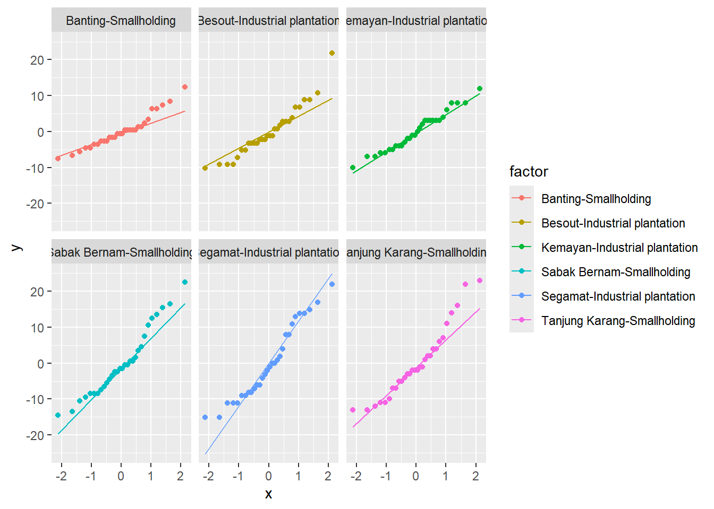
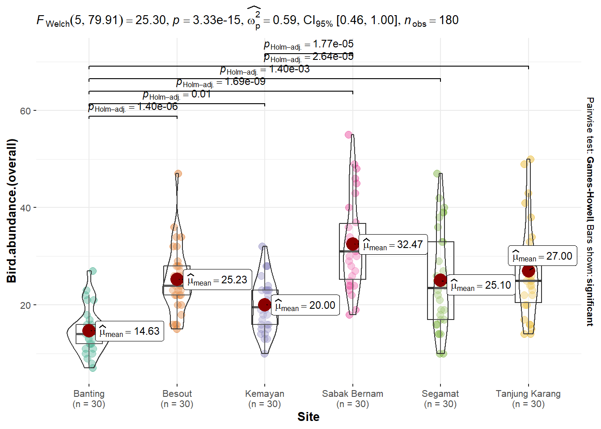

You can cite this package as:
Patil, I. (2021). Visualizations with statistical details: The 'ggstatsplot' approach.
Journal of Open Source Software, 6(61), 3167, doi:10.21105/joss.03167
Code
library(rstatix)
Adjuntando el paquete: 'rstatix'
The following object is masked from 'package:stats':
filter
Code
library(pwr)library(pwr2)library(simr)
Cargando paquete requerido: lme4
Cargando paquete requerido: Matrix
Adjuntando el paquete: 'Matrix'
The following objects are masked from 'package:tidyr':
expand, pack, unpack
Adjuntando el paquete: 'simr'
The following object is masked from 'package:lme4':
getData
The following object is masked from 'package:stringr':
fixed
Code
library(nortest)library(car)
Cargando paquete requerido: carData
Adjuntando el paquete: 'car'
The following object is masked from 'package:dplyr':
recode
The following object is masked from 'package:purrr':
some
# A1: Independencia de las observaciones# A2: Normalidad# A3: Homogeneidad de varianzasanova1 <-aov(`Bird.abundance.(overall)`~ Site + Management, data = aves)summary(anova1)
Df Sum Sq Mean Sq F value Pr(>F)
Site 5 5614 1122.7 17.42 5.76e-14 ***
Residuals 174 11214 64.5
---
Signif. codes: 0 '***' 0.001 '**' 0.01 '*' 0.05 '.' 0.1 ' ' 1
$`Banting-Smallholding`
Shapiro-Wilk normality test
data: X[[i]]
W = 0.94586, p-value = 0.1308
$`Besout-Industrial plantation`
Shapiro-Wilk normality test
data: X[[i]]
W = 0.93165, p-value = 0.05434
$`Kemayan-Industrial plantation`
Shapiro-Wilk normality test
data: X[[i]]
W = 0.97034, p-value = 0.5486
$`Sabak Bernam-Smallholding`
Shapiro-Wilk normality test
data: X[[i]]
W = 0.94674, p-value = 0.1382
$`Segamat-Industrial plantation`
Shapiro-Wilk normality test
data: X[[i]]
W = 0.94279, p-value = 0.1081
$`Tanjung Karang-Smallholding`
Shapiro-Wilk normality test
data: X[[i]]
W = 0.92904, p-value = 0.04631
Code
# "Banting-Smallholding" (NORMAL) # "Tanjung Karang-Smallholding" (NORMAL) # "Sabak Bernam-Smallholding" (NORMAL) # "Kemayan-Industrial plantation" (NORMAL)# "Segamat-Industrial plantation" (NORMAL)# "Besout-Industrial plantation" (NO-NORMAL) -> sin embargo, en el gráfico puede considerarse normal, porque la mayoría de los puntos se encuentran dentro de la linea de tendencia.ggplot(aves, aes(sample = residuales, color = factor))+geom_qq()+geom_qq_line()+facet_wrap(~factor)

A3: Homogeneidad de varianzas
Code
# leveneTest(`Bird.abundance.(overall)`~ Site, data = aves, center = mean)
Levene's Test for Homogeneity of Variance (center = mean)
Df F value Pr(>F)
group 5 5.168 0.0001904 ***
174
---
Signif. codes: 0 '***' 0.001 '**' 0.01 '*' 0.05 '.' 0.1 ' ' 1
Code
leveneTest(`Bird.abundance.(overall)`~ Management, data = aves, center = mean)
Levene's Test for Homogeneity of Variance (center = mean)
Df F value Pr(>F)
group 1 8.6349 0.003735 **
178
---
Signif. codes: 0 '***' 0.001 '**' 0.01 '*' 0.05 '.' 0.1 ' ' 1
En al prueba de normalidad de los residuales, los p-valores fueron > a 0.05 lo que indicaba que si tenían normalidad, a excepción de “Besout-Industrial plantation”, que con el gráfico se podía dar lugar a una supuesta normalidad.
Ya en la prueba de Levene, para el test de Homogeneidad de Varianzas, los p-valores tanto para Site y Management fueron menores menores a 0.05 (p-valor < 0.05), por lo que no se puede aplicar esta prueba Modelo estadístico para explicar la Abundancia de aves, lo que se puede sugerir que se aplique otra prueba como el Kruskal Wallis o una prueba más robusta para el ANOVA -> ANOVA - Welch
Graficando
Code
ggbetweenstats(aves, y =`Bird.abundance.(overall)`, x = Site, Management ="np",bf.message =FALSE,pairwise.display ="s")

Los valores que se encuentran en la parte superior del gráfico donde destaca la F-Welch, con el valor de F(5, 79.91) = 25.30 con lo que se haya el p-valor = 3.33 * 10^15, lo que indica que es menor a 0.05, lo que por consecuencia, se dispone a Rechazar la H0 que indica que los promedios de todos los grupos son iguales.
El tamaño del efecto es de 0.59, lo que revisando el paper de tamaño de efectos, nos indica que con este valor se tiene un efecto grande.
Con los p-valores en el gráfico, realizada con la Prueba Post Hoc de Games-Howell, nos representa que el promedio del grupo Banting es significativamente diferente con con todas los otros factores, ya que el p-valor con todos ellos son menor a 0.05 (p-valor < 0.05), por otra parte, El grupo Kemaya y Sabak Bernam, son otros dos grupos que presentan una diferencia significativa en sus promedios.